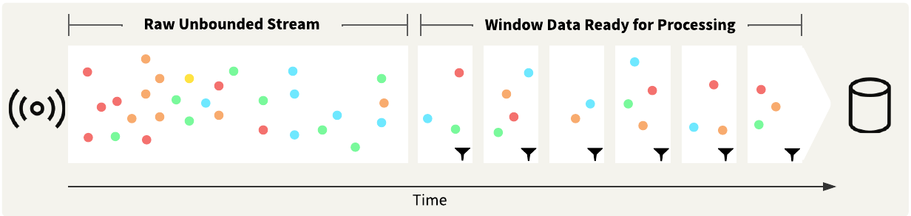
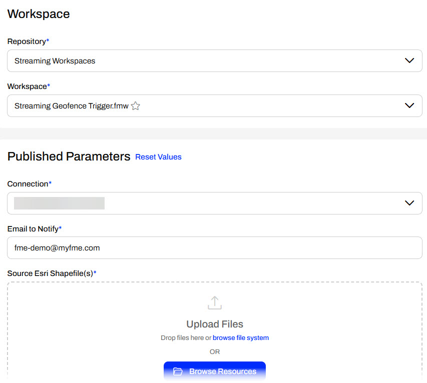
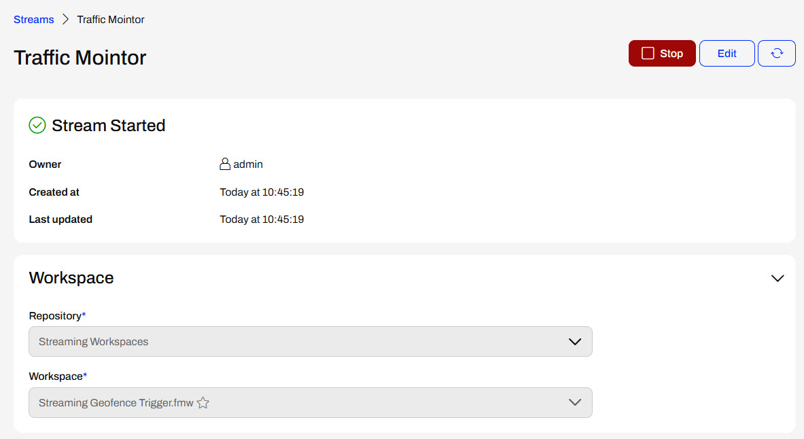
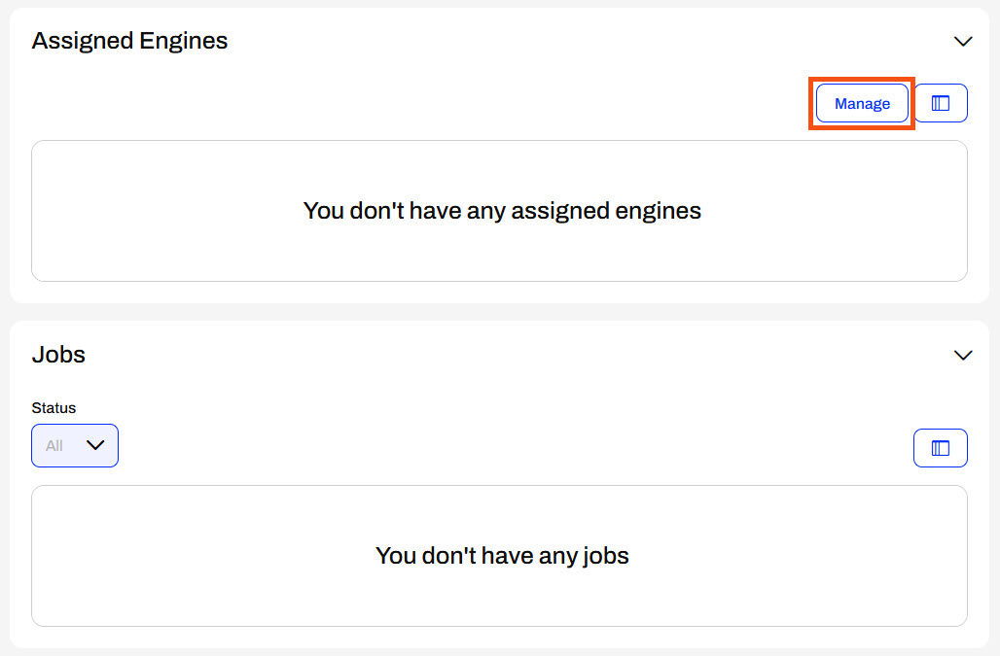
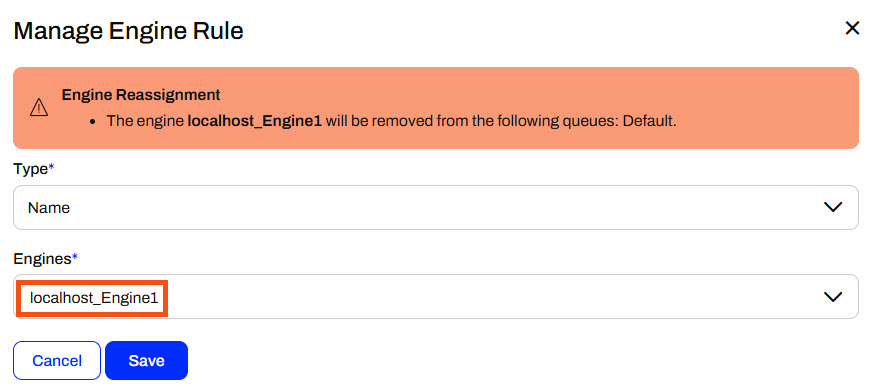
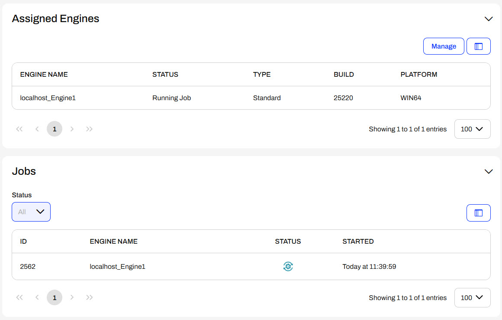
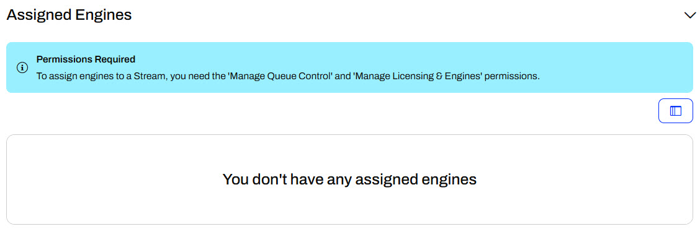

After completing this lesson, you'll be able to:
FME Flow Streams allow a workspace to run continuously to process an unbounded data stream. This process is known as stream processing, which groups together the collection, integration, and analysis of unbounded data. Unbounded data does not have a definitive start and end like a file—it is infinite. Streams generally process small records arriving at extremely high velocity.
The Internet of Things (IoT) often produces data streams. Examples include: GPS sensors, weather feeds, and Automatic Meter Readings (AMR). These devices typically publish their data to an intermediary application, like a message broker or queue, which you can connect to from an FME workspace.
FME Flow Streams allow organizations to deliver insights on unbounded data continuously.
An FME Flow Stream runs a single FME workspace continuously and indefinitely until you stop it. The workspace should contain a transformer that can run in 'Stream Mode', such as the KafkaConnector, or another connector that will cause the workspace to run indefinitely until you stop it, such as a WebSocket connector.
Since a data stream is unbounded, a TimeWindower transformer creates time-based 'Windows', or groups, of data processed downstream in the workspace, as illustrated below.

FME has transformers with Stream Mode to connect to different message queues and brokers, including the KafkaConnector, AzureIoTConnector, MQTTConnector, and many more.
Once you author your workspace to process continuous data and publish it to FME Flow, you create a Stream by filling out a form on FME Flow.

When creating a stream, you must select a single workspace to run continuously and process your data stream. Once you choose a workspace, FME Flow will also display the workspace's Published Parameters for you to configure.

After you set a name for your Stream, the workspace to run, and configure the parameters, you click Create to finalize the settings. Your Stream starts immediately; however, FME Flow is not yet processing your data.

You must assign an FME Engine to your Stream so the workspace can run continuously. If you scroll down on the Stream Started page, you'll see that your new Stream does not have any assigned engines or jobs. So, although the Stream is started and running, the workspace is not actively running on an FME Engine to process the continuous data. To add an Engine to the Stream, click Manage under Assigned Engines.
1
From the Manage Engine Rule window, you need to select an Engine to assign to run your Stream workspace continuously. You will likely remove the engine you assigned to the Stream from another job queue so that FME Flow will warn you about the engine reassignment.

Once you assign an engine to the running Stream, a job will immediately start, and your workspace will be actively running to process the continuous data stream.

If you click on the job, FME Flow will open the Jobs page and display the job log. You can also access the continuously running job from the Jobs page on FME Flow.
FME Flow limits Engine permissions to users with fmesuperuser or fmeadmin roles by default. Your FME Flow administrator can enable the Manage Licensing & Engines permission to individual users and a group in a role. While you may have permission to create a Stream on FME Flow, you may not have permission to assign an engine to the Stream to run your workspace and continuously process the data stream. FME Flow will alert you in the Assigned Engines section if you do not have the required permissions. If you encounter this, you can request that your FME Flow administrator grant you the Manage Licensing & Engines permission or assign an engine to your Stream.

FME Flow Automations provide an excellent way to process real-time events, but are not well-suited to processing a continuous, unbounded data stream. Data from a stream typically arrives at a very high velocity. Submitting a new translation to an FME Flow Engine each time FME Flow receives a message from a data stream would be too much processing for the FME Flow Core. Instead, a Stream continually runs a workspace to handle the high velocity and unbounded stream it requires, which can be thousands of messages per second. The engine actively runs while the Stream runs, even during low incoming data rates, and is not available for other jobs on FME Flow.
Automations can generally process data up to one feature per second, and an engine will only run if the Automation triggers and submits a workspace to run. If you need to process data with multiple features per second, you should use Streams instead of Automations. Therefore, there is a trade-off between processing capabilities and engine usage with Streams. While you can process multiple features per second with a Stream, you must dedicate an engine to the Stream, and you cannot use it to run other jobs on FME Flow.

Due to the high complexity of FME Flow Streams, this lesson has no exercise. For more information and tutorials on Streams, see these resources: